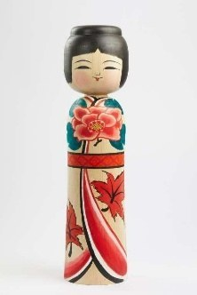

Tsugaru Ōgata Kokeshi là phiên bản Kokeshi cỡ lớn thuộc dòng Tsugaru-kei, một trong các dòng Kokeshi truyền thống của Nhật Bản (thường được chia thành 11–12 dòng, tuỳ cách phân loại). Dòng búp bê này được chế tác chủ yếu tại Nuruyu Onsen và Owani Onsen, tỉnh Aomori, nơi nổi tiếng với nghệ thuật tiện gỗ và sơn vẽ truyền thống.
Tác phẩm được chế tác từ một khối gỗ nguyên bằng kỹ thuật tsukuri tsuke, đặc trưng của dòng Tsugaru. Búp bê có phần đầu tròn, mái tóc ngắn và thân hình cân đối. Điểm nổi bật là những họa tiết hoa mẫu đơn – biểu tượng của phú quý, hạnh phúc – kết hợp với lá phong đỏ (momiji), biểu tượng của mùa thu Nhật Bản và vẻ đẹp của sự chuyển mình trong thiên nhiên. Các hoa văn được vẽ hoàn toàn bằng tay với gam màu đỏ, xanh và đen hài hòa trên nền gỗ tự nhiên.
Trong văn hóa Nhật Bản, Tsugaru Kokeshi tượng trưng cho sức khỏe, bình an và hạnh phúc, còn hoa mẫu đơn và lá phong thể hiện sự thịnh vượng, trường thọ và vẻ đẹp của bốn mùa. Với kích thước lớn và kỹ thuật trang trí tinh xảo, Ōgata Kokeshi thường được trưng bày như một tác phẩm mỹ nghệ, góp phần giới thiệu tinh hoa thủ công truyền thống của Aomori và giá trị văn hóa đặc sắc của nghệ thuật Kokeshi Nhật Bản.
津軽系大型こけしは、日本の伝統こけしの系統のひとつ（11系統と数えるのが長く一般的で、近年は12系統とする数え方もあります）である津軽系の大型作品です。津軽系こけしは主に青森県の温湯温泉や大鰐温泉で作られており、この地域は伝統的な木地挽きと絵付けで知られています。
本作は、津軽系の特徴である「作り付け」の技法により一本の木から作られています。丸い頭、短い髪、均整のとれた姿が特徴です。最大の見どころは、富貴と幸福の象徴である牡丹と、日本の秋と自然の移ろいの美しさを表す赤いもみじの文様です。文様はすべて手描きで、自然の木肌の上に赤・緑・黒が調和よく配されています。
日本文化において、津軽系こけしは健康・平穏・幸福を象徴し、牡丹ともみじは繁栄・長寿・四季の美しさを表します。大きなサイズと精巧な装飾を備えた大型こけしは美術工芸品として飾られることが多く、青森の伝統手工芸の粋と日本のこけし芸術ならではの文化的価値を伝えています。